Voltra — Documentation
Everything you need to run the marketplace day to day. Screenshots are taken
from the actual running app, so what you see here is what you get.
| Guide | What it covers |
|---|
| 01 — Installation | Requirements, upload, first login, going live |
| 02 — Admin tour | Dashboard, navigation, who can see what |
| 03 — Products | Adding products, variants, SKUs, images, deal timers |
| 04 — Orders & tracking | Order flow, packages, shipment updates, refunds |
| 05 — Vendors & payouts | Approving sellers, commission, the ledger, paying out |
| 06 — Storefront content | Banners, categories, brands, menus, pages, blog |
| 07 — Coupons & shipping | Discount codes, shipping zones and rates |
| 08 — Settings | Every settings tab explained |
| 09 — Vendor panel | What your sellers see |
| 10 — SEO | How SEO is generated, URLs, sitemap |
| 11 — Backup & restore | Backups, restoring, what is protected |
| 12 — Troubleshooting | Common problems and fixes |
Quick reference
Demo logins (password password123):
| Role | Email | Lands on |
|---|
| Admin | admin@voltra.test | /admin/ |
| Vendor | nova@voltra.test | /vendor/ |
| Buyer | rahul@example.com | /account.php |
Before going live: turn off the one-click demo buttons in
Settings → Commerce → "Show one-click demo logins", and change every
demo password. They are convenience for evaluation, not for production.
1 — Installation
Requirements
| Need | Detail |
|---|
| PHP | 8.1 or newer |
| Extensions | pdo_sqlite (required), curl (payments/AI), zip (zip backups), gd (optional) |
| Server | Apache/LiteSpeed with mod_rewrite, or PHP's built-in server for testing |
| Database | None to install — SQLite lives in db/voltra.sqlite |
No Composer. No npm. No build step. There is nothing to compile.
Install
1. Unzip the archive and upload the contents to your web root
(public_html, htdocs, or similar).
2. Make sure uploads/ and db/ are writable by PHP (usually 755, some
hosts need 775).
3. Open your domain in a browser.
That's it. A seeded demo database ships inside the zip, so the site works
immediately — you do not need to run an installer.
Resetting to factory demo data
php db/seed.php
This wipes and rebuilds the demo catalogue, vendors and orders. Only use it on
a fresh install — it will destroy real data.
Running locally
php -S 0.0.0.0:8080 router.php
router.php emulates the .htaccess rewrites so pretty URLs work with PHP's
built-in server.
First login
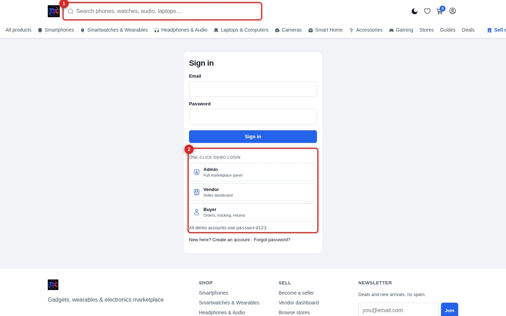
1. Normal login — email and password.
2. One-click demo buttons — Admin, Vendor and Buyer. These submit a normal
form post, so they go through the same CSRF and password checks as a typed
login. They work with JavaScript disabled.
Log in as Admin to reach /admin/.
Going live — checklist
Work through this before you accept a real order:
- Settings → Commerce → turn off "Show one-click demo logins"
- Change the password on every demo account (Users)
- Delete or rename the demo accounts you do not need
- Settings → Site identity → your name, logo, favicon
- Settings → Payments → real Razorpay/PayPal keys, switch off sandbox
- Settings → Email → your SMTP credentials, send a test
- Settings → Commerce → currency, commission rate, minimum payout
- Replace the demo products, vendors and banners with your own
- Take a backup (Settings → Backup)
Security notes
These are already handled, but worth knowing:
Next: Admin tour →
2 — Admin tour
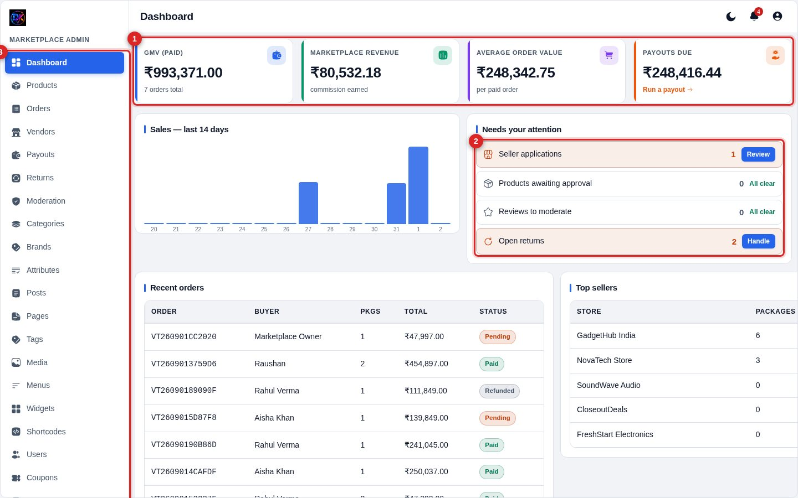
The dashboard
1 — KPI cards. Gross merchandise value (paid orders only), your commission
earned, average order value, and payouts owed to sellers. Each has its own
accent colour so you can find one at a glance.
2 — Needs your attention. A live to-do list. Anything above zero turns
amber and gets a button straight to the fix. Anything at zero says
"All clear" and stays quiet — a zero here is good news, so it does not shout.
3 — Sidebar. Every section of the panel. Items you lack permission for are
hidden entirely, not greyed out.
Below the fold: a 14-day sales chart, recent orders, top sellers by package
count, and low-stock alerts.
Reading the colour language
The panel uses one rule consistently:
Soft tinted background = information.
Solid saturated fill = the thing you click.
So a *Pending* pill is a tinted amber chip (it tells you something), while
Mark paid is a solid blue button (it does something). Destructive actions
stay tinted red until you hover, then commit to full red.
Notifications
The bell in the top bar shows unread count. Opening a notification marks just
that one as read and the badge drops by one — there is also Mark all read.
Who can see what
Capabilities are enforced server-side on every page and every AJAX call, not
just hidden in the UI.
| Role | Can reach |
|---|
super_admin | Everything |
admin | Everything except user role changes |
support | Orders, returns, moderation — not payouts or settings |
vendor_owner | Only /vendor/, scoped to their own store |
customer | Storefront and their own account |
A vendor who requests another vendor's order gets a 403, not an empty page.
Moderation queue
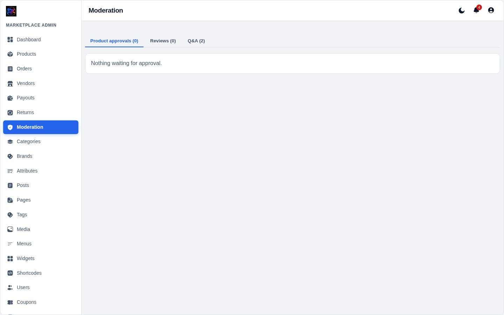
Products, reviews and questions awaiting approval, in one place. Approve or
reject in a click. If a vendor has auto-approve on, their products skip
this entirely.
Users and roles
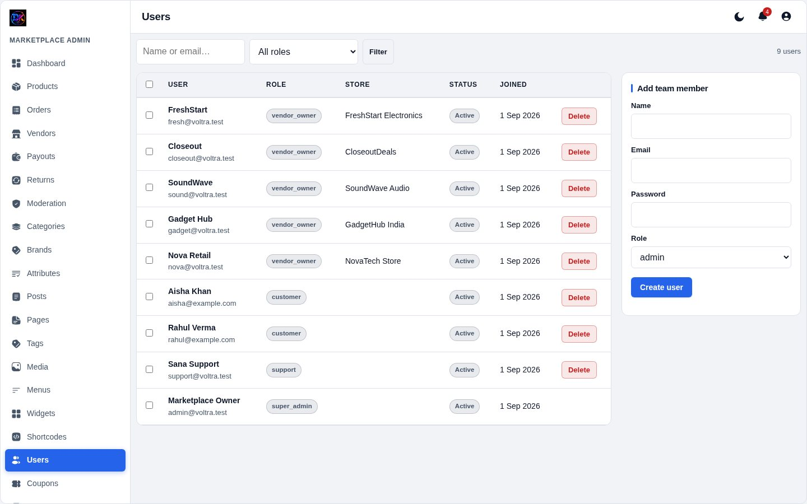
Every account with its role. Change a role here — capability checks apply
immediately on the next request, server-side.
Analytics
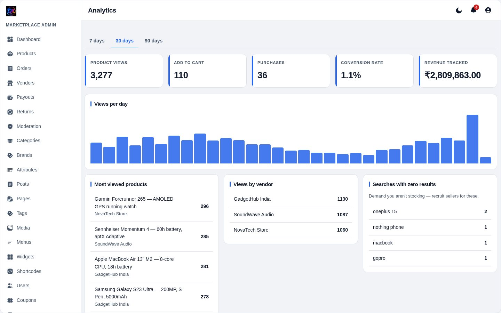
Product views, add-to-carts, purchases and zero-result searches. That last
one is the most useful: it tells you what buyers wanted and you did not stock.
Sections at a glance
| Section | Use it for |
|---|
| Products | Catalogue, variants, stock |
| Orders | Every order, package-level fulfilment |
| Vendors | Seller applications, KYC, commission overrides |
| Payouts | Paying sellers what they have earned |
| Returns | RMA requests |
| Moderation | Products, reviews and questions awaiting approval |
| Categories / Brands / Attributes | Catalogue structure and filter facets |
| Posts / Pages | Blog and static pages |
| Media | Every uploaded file |
| Menus / Widgets / Shortcodes | Storefront layout |
| Banner slider | Homepage carousel |
| Coupons | Discount codes |
| Ads & Sponsored | Banner ads and paid listing placements |
| Shipping | Zones and rates |
| Analytics | Views, add-to-carts, purchases, zero-result searches |
| Users | Accounts and roles |
| Settings | Everything else |
3 — Products
The product list
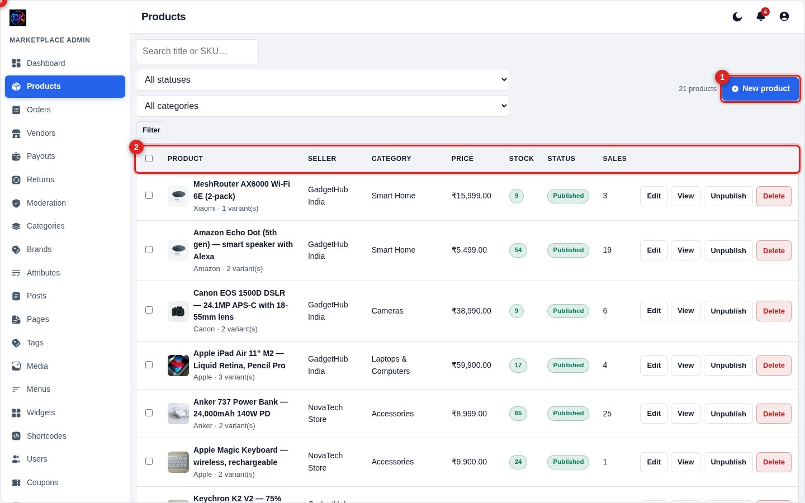
1 — Add product. Opens an empty editor.
2 — Column headers. Click to sort.
3 — Bulk bar. Tick rows and it appears — publish, unpublish or delete in
one go.
Each row shows the thumbnail, title, seller, price, stock and status. View
opens the live product page in a new tab.
Adding a product
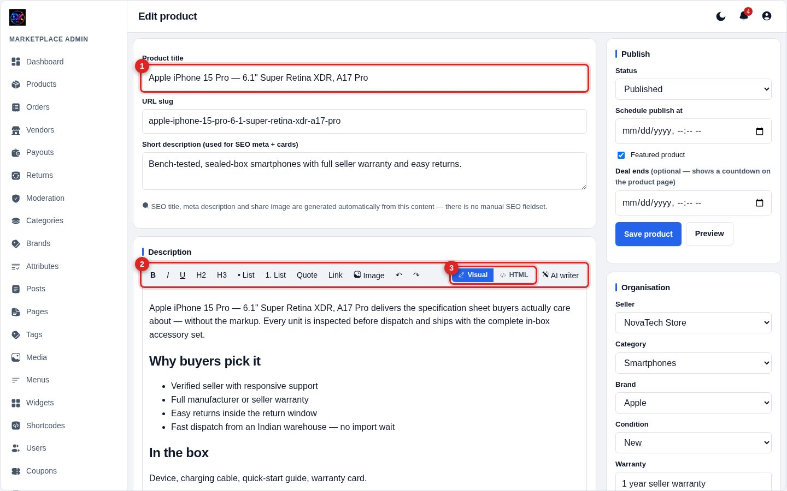
1 — Product title. The URL slug fills itself from the title. You can edit
it, but changing it on a live product changes its URL — old links will 404, so
only do it before publishing.
2 — Description toolbar. Bold, italic, headings, lists, quotes, links,
images, and the AI writer.
3 — Visual / HTML toggle. Switch between the rich editor and raw HTML.
Content is copied across on every switch, so the two can never drift apart. In
HTML mode the formatting buttons are disabled — they do nothing useful on a
textarea.
There is no SEO fieldset. The meta title, description, Open Graph tags
and structured data are all generated from the title, short description and
body. See SEO.
Short description
Used for the meta description and the product card excerpt. Keep it under
about 160 characters. If you leave it blank, the system falls back to the first
part of the body.
Variants, pricing and stock
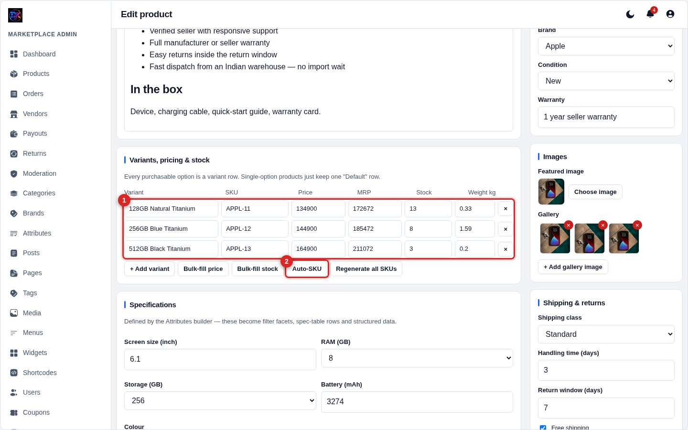
1 — Variant rows. Every purchasable option is a row: title, SKU, price,
MRP, stock, weight. A product with no options just keeps one row called
"Default".
2 — Auto-SKU. Generates SKUs from the product and variant names
(APPL-11, APPL-12…). Duplicates are flagged red as you type, and the
server de-duplicates case-insensitively on save — it adds a suffix rather than
refusing the save.
Other buttons:
| Button | Does |
|---|
| + Add variant | New empty row |
| Bulk-fill price | Same price into every row |
| Bulk-fill stock | Same stock into every row |
| Regenerate all SKUs | Overwrites every SKU, even filled ones |
MRP is the struck-through "was" price. Set it higher than price and the
card automatically shows a discount badge. Leave it equal (or empty) for no
badge.
Stock drives the storefront: 0 shows *Out of stock* and disables the
buy button; 1–3 shows *Only N left*. Anything higher shows nothing at all —
a green "In stock" on every card is noise.
Images, publishing and deal timers
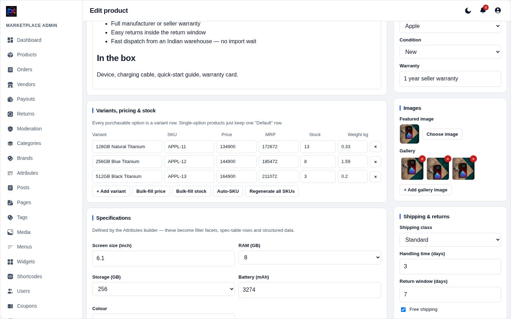
Featured image is the card thumbnail and the social share image.
Gallery images appear as thumbnails on the product page. Use **Choose
image** to pick from the media library or upload on the spot.
Status — Draft, Pending or Published. Schedule publish at sets a future
go-live date.
Deal ends is the countdown. Set a date and time and the product page shows
a live timer (days/hours/minutes/seconds) that removes itself when the offer
expires. Leave it blank for no timer.
Shipping & returns — shipping class, handling days, return window, and a
free-shipping flag for this product.
Specifications
Driven by the Attributes builder. Whatever you define there appears here as
fields, and those values become filter facets on the shop page, rows in the
spec table, and structured data for search engines.
Moderation
If a vendor submits a product, it lands in Moderation as *Pending*. Approve
or reject it there. You can let a trusted vendor skip this — see
Vendors.
4 — Orders & tracking
How an order is structured
This is the one concept worth understanding before anything else:
One cart → one payment → one order → one package per seller.
If a buyer orders from three vendors, they pay once and get one order with
three packages. Each package ships separately, has its own delivery
estimate, its own fulfilment status, and its own commission line. Package
subtotals always add up to what the buyer was charged.
The orders list
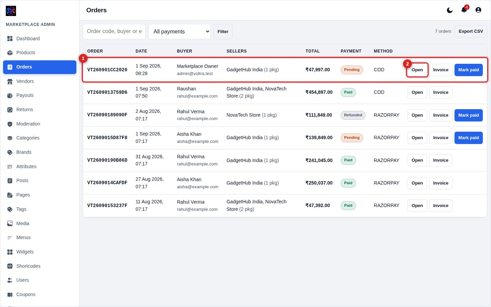
1 — Order rows. Code, date, buyer, which sellers are involved, total,
payment status and method.
2 — Open. The order detail page. Invoice produces a printable invoice.
Mark paid appears only on unpaid orders — that is the solid blue button,
because it is the action.
Filter by payment status or search by order code, buyer name or email.
Export CSV gives you the filtered set.
Order detail and shipment updates
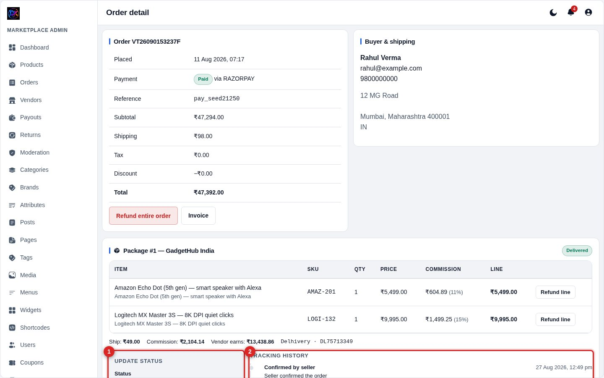
The top of the page shows totals, the buyer's address, and order-level actions.
Below that, one block per package.
1 — Update status. Everything about a shipment in one form:
| Field | Notes |
|---|
| Status | Confirmed → Packed → Shipped → Delivered (or Cancelled) |
| Carrier | Only shown once you pick Shipped |
| Tracking no. | Same |
| Location | Optional, e.g. "Bhiwandi hub" |
| Note to buyer | Optional, visible to the customer |
Save status applies the change. Add note only records an update
*without* changing the status — useful for "Held at hub for address check".
2 — Tracking history. Every change and note, appended in order. This table
is append-only — nothing is overwritten, so you always have the full audit
trail. The buyer sees the same history in their account, minus staff names.
What each status does
| Status | Effect |
|---|
| Confirmed | Seller has accepted the order |
| Packed | Ready to hand to the courier |
| Shipped | Emails the buyer the carrier + tracking number |
| Delivered | Starts the return window; releases the seller's earnings. For COD, credits the ledger |
| Cancelled | Restocks the items |
Marking a package delivered twice does not pay the seller twice.
Refunds
Refund line refunds a single item; Refund entire order does the lot.
Either way the ledger reverses *both* the sale credit and the commission debit,
so your books stay correct.
Returns
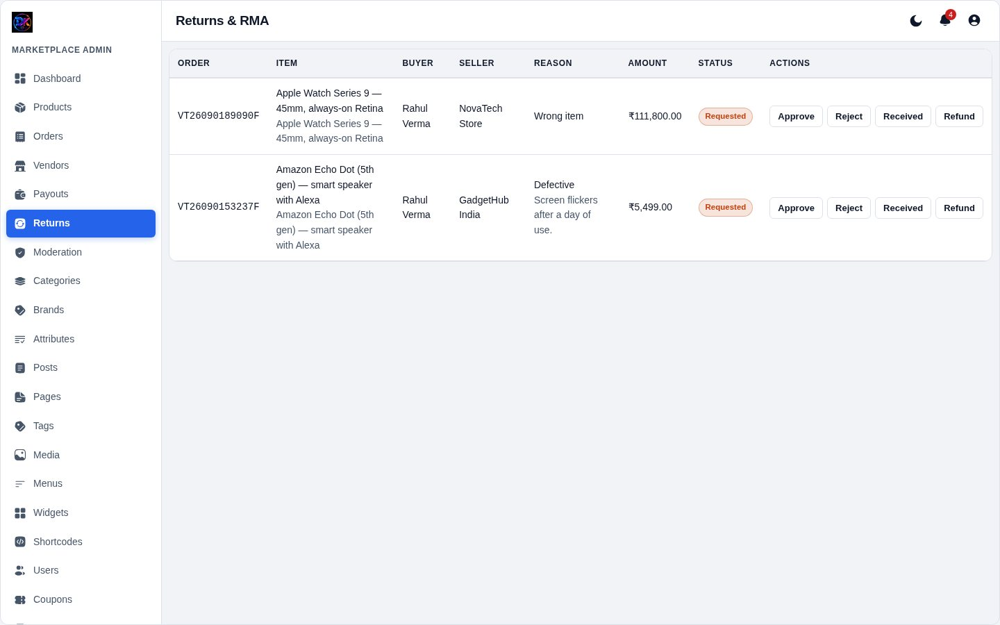
Buyers request a return from their account inside the return window. Requests
appear here as *Requested* — approve, reject, or mark received. Approving links
the refund back to the original order line.
5 — Vendors & payouts
Approving sellers
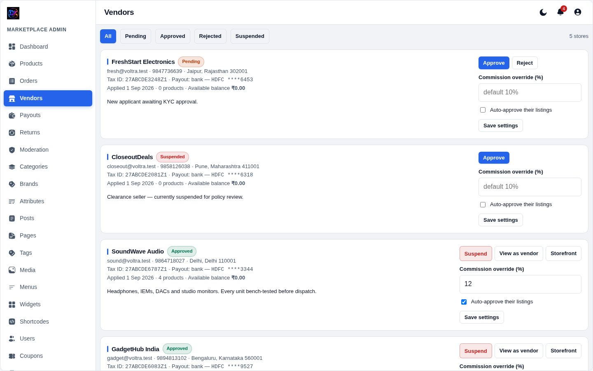
Someone applies through Sell with us on the storefront and lands here as
*Pending*. Open the application to review their business details, tax ID and
payout method, then set KYC status:
| Status | Means |
|---|
| Pending | Applied, cannot sell yet |
| Approved | Can list products and receive orders |
| Rejected | Application refused |
| Suspended | Was approved, now blocked — their store 404s |
Per-vendor settings
Commission rate overrides the site default for this seller. Leave it blank
to use the global rate.
Auto-approve lets a trusted seller publish without going through
Moderation. Off by default.
How the money works
This is the part worth reading carefully.
vendor_ledger is an append-only table of signed rows:
| Type | Sign | When |
|---|
sale | + | Order paid |
commission | − | Order paid |
refund | − | Item refunded |
refund_commission | + | Item refunded (gives the commission back) |
payout | − | You pay the seller |
A seller's balance is always SUM(ledger) — never a stored number that can
drift out of sync. Rows are never edited or deleted; a correction is a new row.
Each row is in one of two states:
pending — order paid but not yet deliveredavailable — delivered, ready to pay out
Earnings move from pending to available when a package is marked Delivered.
For COD orders that is also the moment the sale is credited at all.
Running a payout
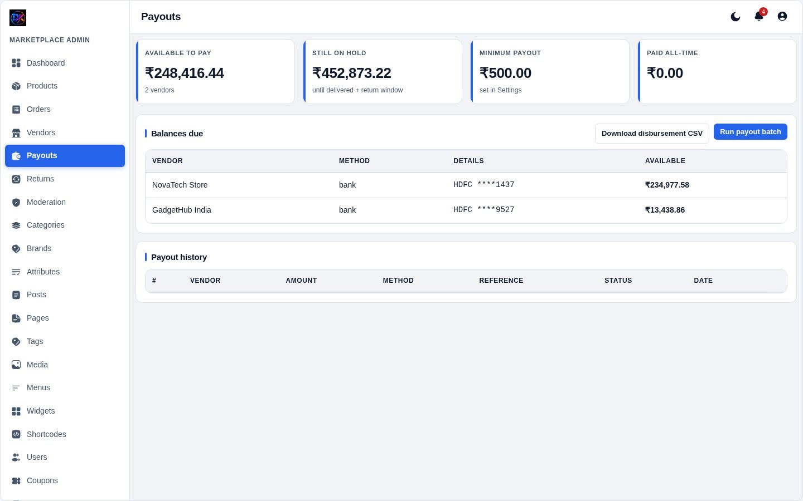
The page lists each seller's available balance. Sellers below the **minimum
payout** (Settings → Commerce) are not shown.
1. Pick the seller and check the amount.
2. Pay them through your bank/UPI outside the system.
3. Record the payout here with the reference number.
Recording it flips those ledger rows to paid and writes a balancing negative
row, so the balance drops to zero and the history stays intact. Nothing is
deleted.
Voltra does not move money by itself. It tells you exactly what to pay
and keeps the record; the transfer is yours to make.
Vendor earnings view
Sellers see the same numbers from their side — pending, available, paid to
date, and every ledger line — in Vendor → Earnings. Because both sides read
the same table, your figures and theirs can never disagree.
6 — Storefront content
Banner slider
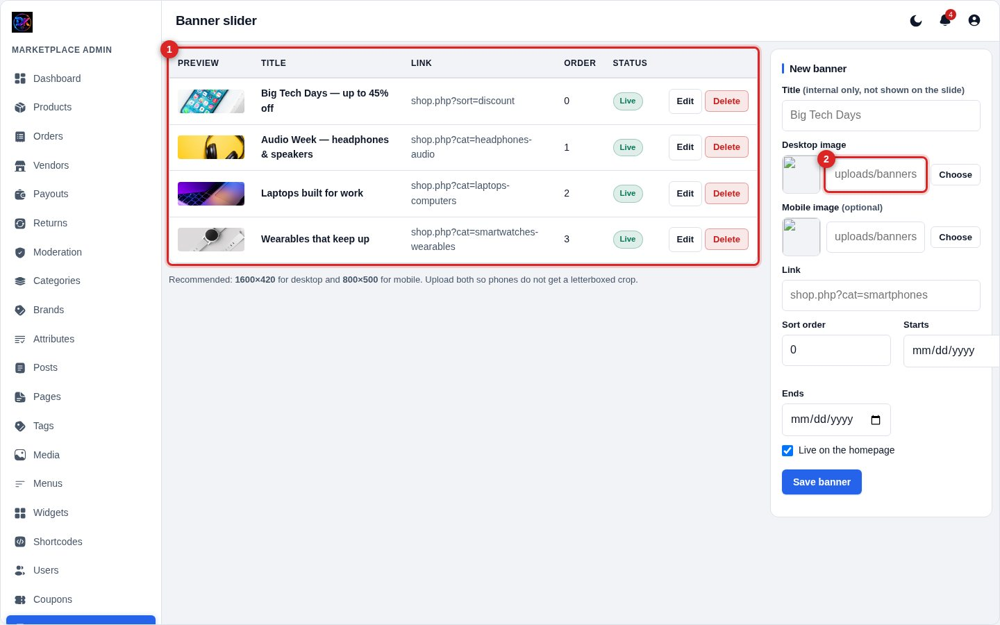
The rotating carousel at the top of the homepage. Images only — no text
overlays, because overlaid text never survives the crop to a phone screen.
1 — Existing banners in display order, with a live/off pill.
2 — Image field. Pick from the media library or upload.
| Field | Notes |
|---|
| Title | Internal only, never shown on the slide |
| Desktop image | 1600×420 recommended |
| Mobile image | 800×500 — upload one, or phones get a letterboxed crop |
| Link | Where the slide goes, e.g. shop.php?cat=smartphones |
| Sort order | Lower shows first |
| Starts / Ends | Optional schedule — outside the window it hides itself |
| Live | Master on/off |
The slider auto-advances every 5 seconds, pauses on hover, supports swipe, and
respects prefers-reduced-motion.
Categories
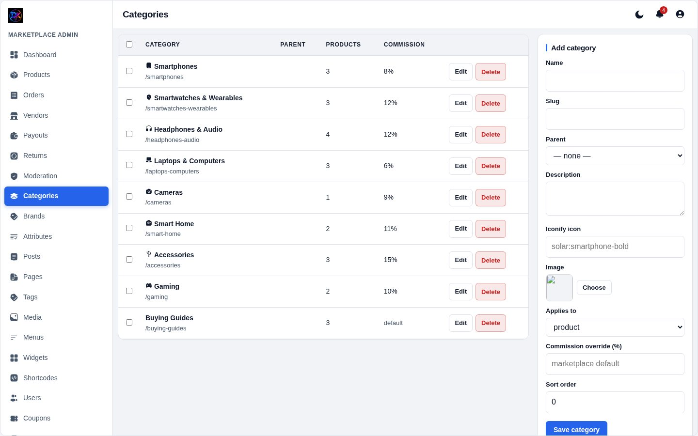
Categories drive the nav, the homepage rail and the shop filters.
| Field | Notes |
|---|
| Name / slug | Slug becomes /c/your-slug |
| Icon | An Iconify name like solar:smartphone-bold |
| Commission rate | Overrides the site default for products in this category |
| Sort order | Position in the nav |
| Description | Shown on the category page, used as its meta description |
Brands
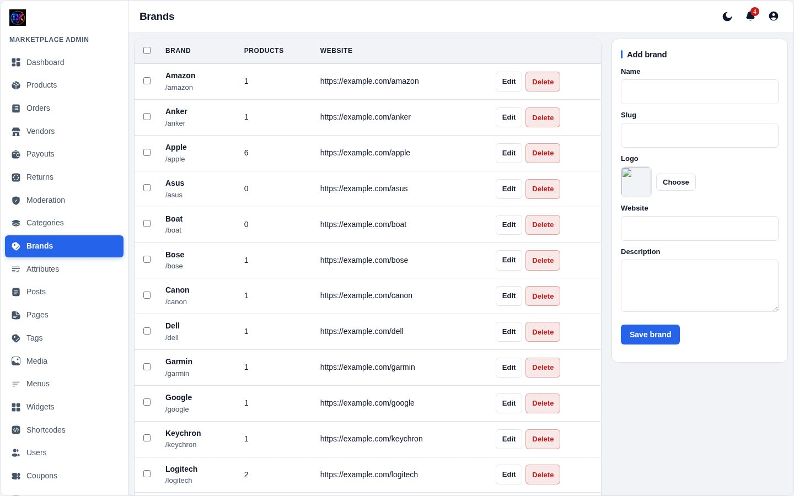
Name, slug, logo and website. Brands appear as a filter facet, on the product
card, in the homepage brand rail, and in the product's structured data.
Media library
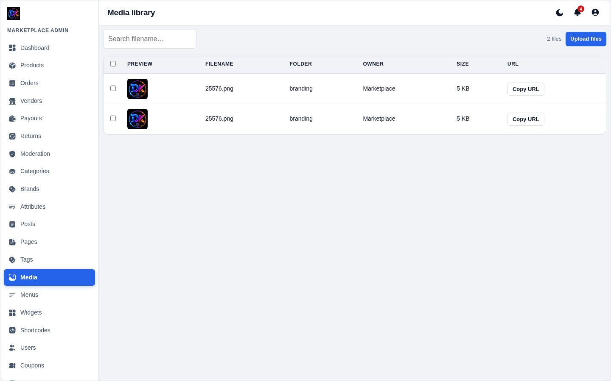
Everything ever uploaded. Search by filename, filter by folder, and **Copy
URL** gives you the full absolute URL (not a relative path), so it works when
pasted anywhere.
Menus
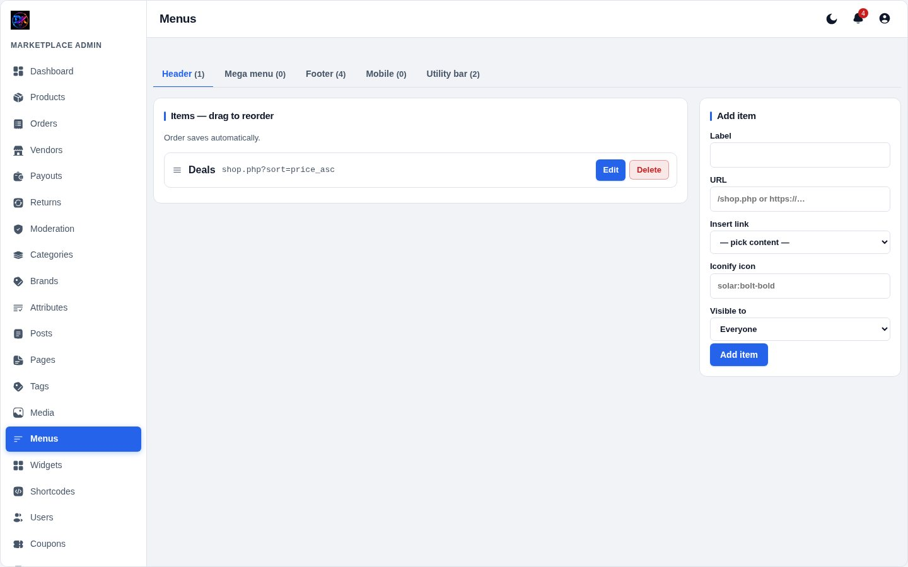
Build the header and footer menus. Drag to reorder, nest one level for
dropdowns. Items can point at a category, a page, a product or a custom URL.
Pages and blog
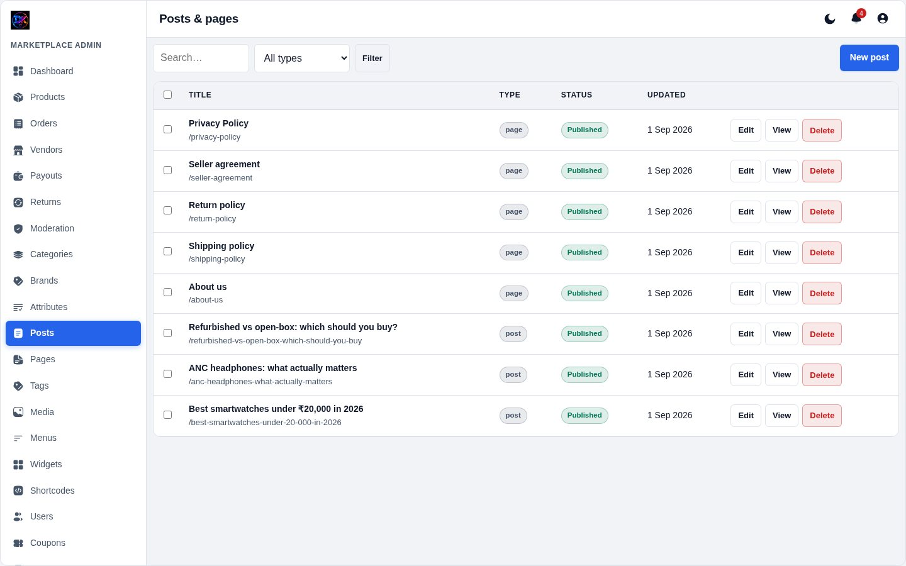
Pages are static content — About, Privacy, Returns Policy. Posts are
the blog / buying guides.
Both use the same editor as products, including the Visual/HTML toggle and the
AI writer, and both get their SEO generated automatically.
Blog cards on the storefront are deliberately styled differently from product
cards — wide 16:9 image, reading time, "Read guide" link — so the homepage does
not read as one endless grid.
Widgets and shortcodes
Widgets fill the sidebar and footer blocks. Shortcodes let you define a
snippet once (say a shipping table) and drop [my-snippet] into any page or
product description.
7 — Coupons & shipping
Coupons
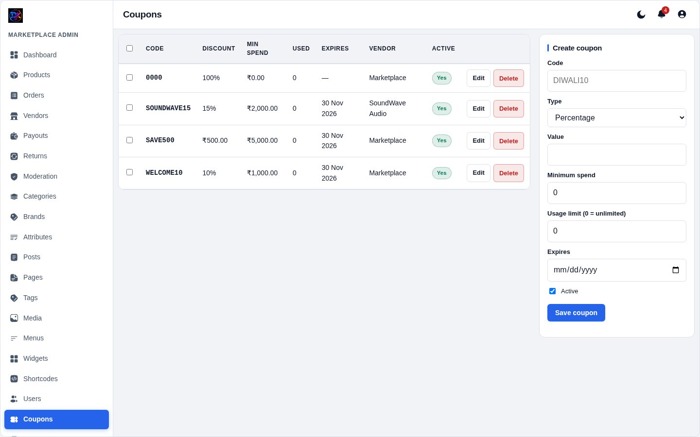
| Field | Notes |
|---|
| Code | What the buyer types. Matched case-insensitively |
| Kind | percent or fixed |
| Value | 10 = 10% off, or ₹10 off, depending on kind |
| Min spend | Cart subtotal must reach this |
| Vendor | Leave blank for site-wide, or tie it to one seller |
| Usage limit | 0 = unlimited |
| Expires | Last valid day |
| Active | Master on/off |
Buyers apply codes in the cart. The totals update over AJAX without a reload,
and the discount is recalculated server-side at checkout — a tampered
client cannot change the price.
A vendor-specific coupon only discounts that seller's items in a mixed cart.
Shipping
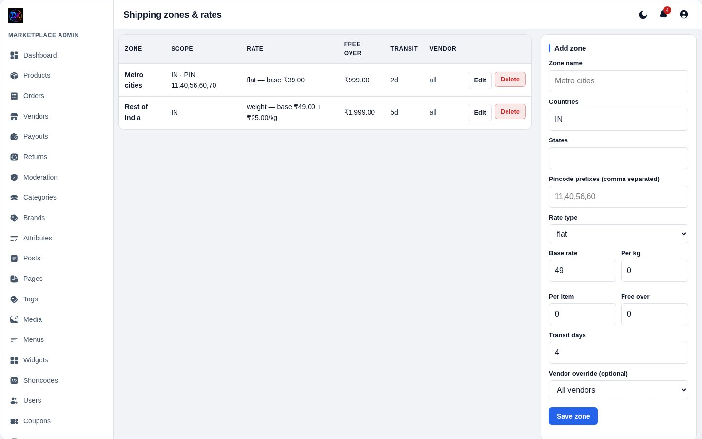
Shipping is zone + rate.
Zones group pincodes or states — e.g. *Metro*, *Rest of India*,
*North-East*.
Rates within a zone can be:
| Type | Behaviour |
|---|
| Flat | One price per package |
| Weight-based | Price per kg, using variant weights |
| Free above | Free once the package subtotal passes a threshold |
Rates apply per package, so each seller's shipment is costed separately —
which is what the buyer sees in the cart.
Handling days on a product feed into the delivery estimate. The product
page's *Check delivery* box combines the buyer's pincode, the zone, and the
handling time to produce the date range.
A product that always ships free
Tick Free shipping in the product editor. It overrides the zone rate for
that item.
8 — Settings
Seven tabs. Each saves independently.
Site identity
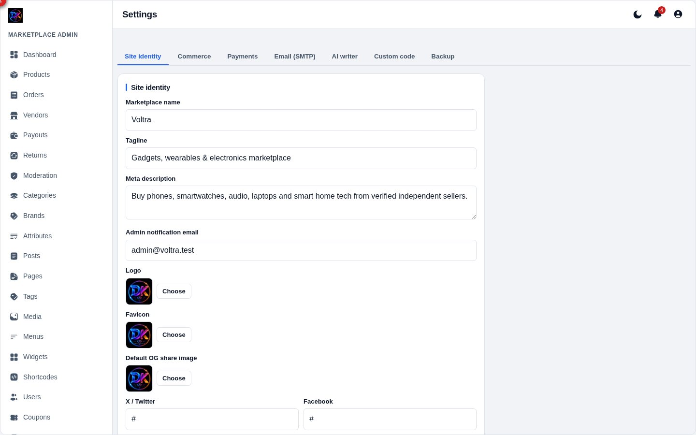
1 — Logo. Replaces the icon + wordmark in the header, footer and admin
sidebar. Constrained by height (34px header, 30px footer), so any aspect ratio
fits. In dark mode it is auto-inverted so a dark logo does not vanish.
2 — Favicon. The browser tab icon. PNG, SVG and ICO all work — the MIME
type is detected from the extension.
Also here: site name, tagline, default social share image, and your social
profile links. A social link left blank is not rendered — no dead #
links in the footer.
Commerce
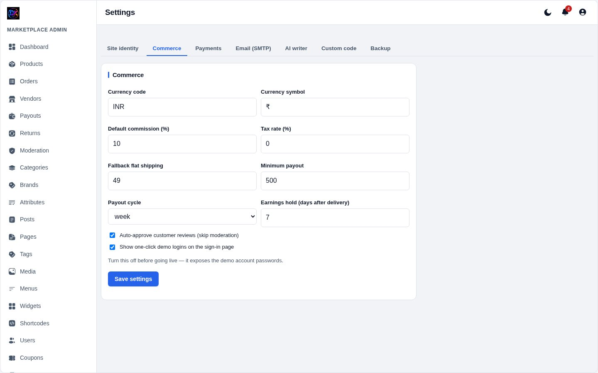
| Setting | Notes |
|---|
| Currency | Symbol and code used everywhere |
| Default commission % | Your cut. Categories and vendors can override it |
| Minimum payout | Sellers below this are not listed on the payouts page |
| Payout cycle | Weekly / fortnightly / monthly — guidance only |
| Earnings hold (days) | Days after delivery before funds become available |
| Default role | What new signups become |
| Auto-approve reviews | Skip moderation for customer reviews |
| Demo logins | Turn this off before going live |
Payments
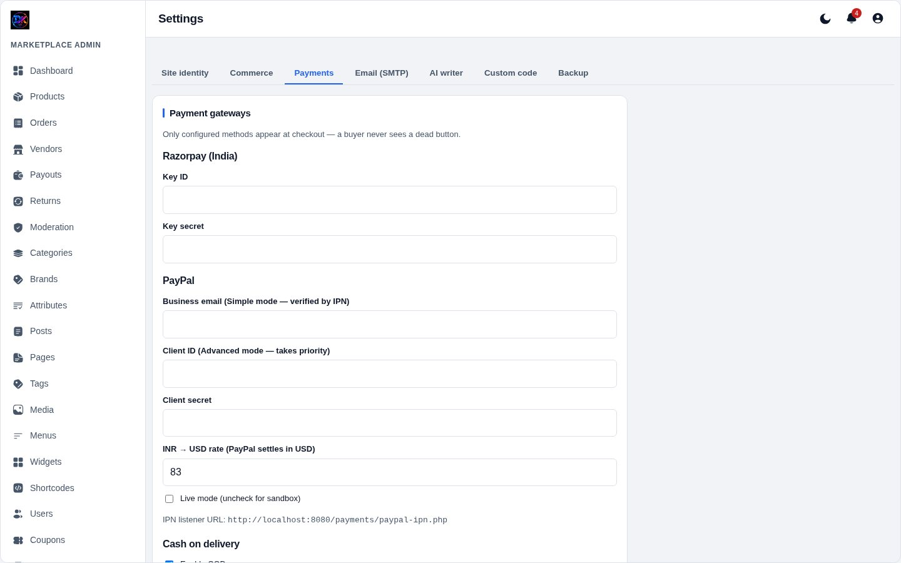
Razorpay — key ID and secret. Signatures are verified server-side with
hash_equals.
PayPal — client ID and secret, plus a Live mode tick (leave unticked
for sandbox). Captures are confirmed with a server-side Orders API call.
COD — on/off. COD earnings are credited to the seller only on delivery.
A browser redirect back from a gateway is never trusted on its own. Payment
is confirmed server-to-server before an order is marked paid.
Email (SMTP)
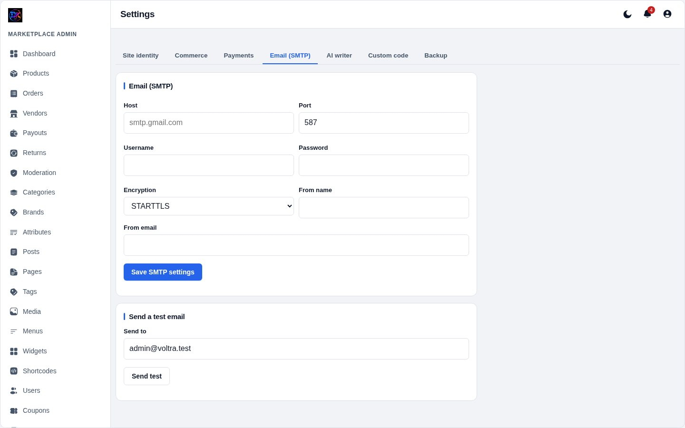
Host, port, username, password, encryption (STARTTLS / SSL / none), and the
from name and address. The SMTP client is dependency-free — no PHPMailer.
Emails sent: order confirmation, shipment with tracking, delivery, refund,
password reset, vendor application result, payout recorded.
Use Send test email after saving. If it fails, check the port (587 for
STARTTLS, 465 for SSL) and whether your host blocks outbound SMTP.
AI writer
Paste a Groq API key to enable the AI writer button in the editors. It
drafts product descriptions and blog posts from a short prompt. Leave the key
blank and the button simply does not appear — nothing else changes.
Custom code
Inject
verbatim to every storefront page. Admin pages are unaffected.
API tokens
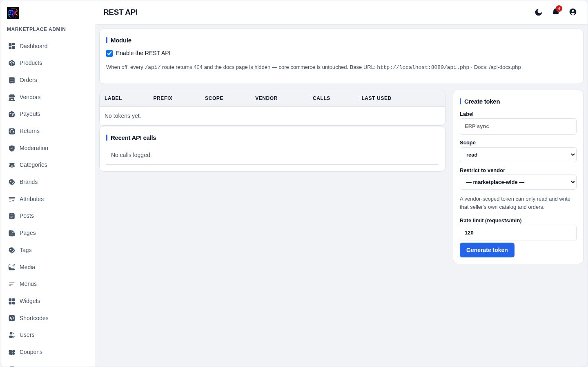
Optional REST API. Create a token (vlt_ + 40 hex, shown once), give it
read or read+write scope, and optionally lock it to a single vendor.
Only the SHA-256 hash is stored, so a lost token cannot be recovered — revoke
and reissue. There is a per-minute rate limit; exceeding it returns 429.
Docs generate themselves at /api-docs.php.
Backup
Covered in Backup & restore.
9 — Vendor panel
What your sellers see at /vendor/. Everything is scoped to their own store —
enforced server-side, on every page and every AJAX call.
Dashboard
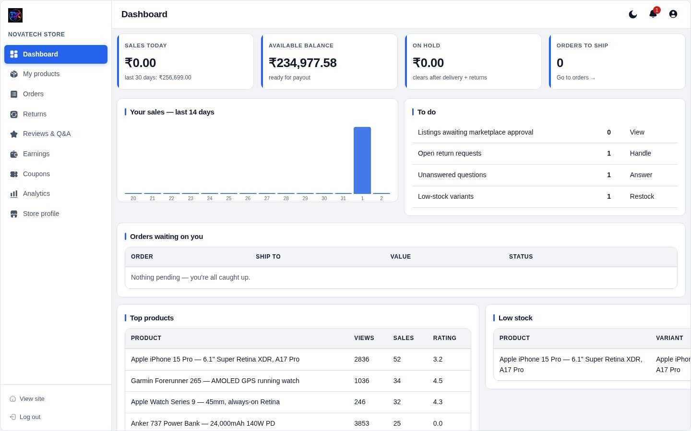
Their sales, orders awaiting action, current balance and recent activity. Same
layout language as the admin, but only their own numbers.
Products
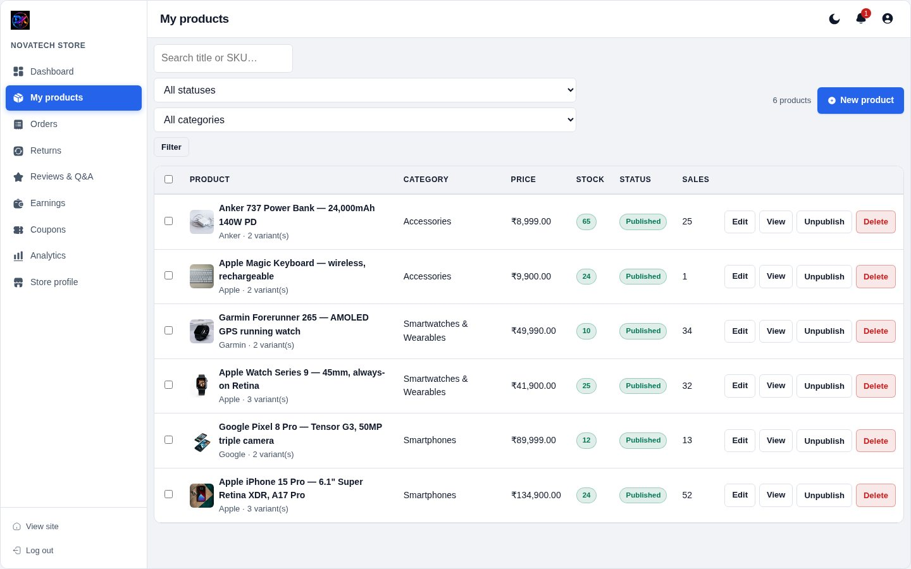
Their catalogue only. They add and edit products with the same editor the
admin uses — variants, SKUs, images, Visual/HTML toggle, the lot.
If auto-approve is off for this vendor, a new product is saved as *Pending*
and appears in your Moderation queue. If it is on, they publish directly.
Orders
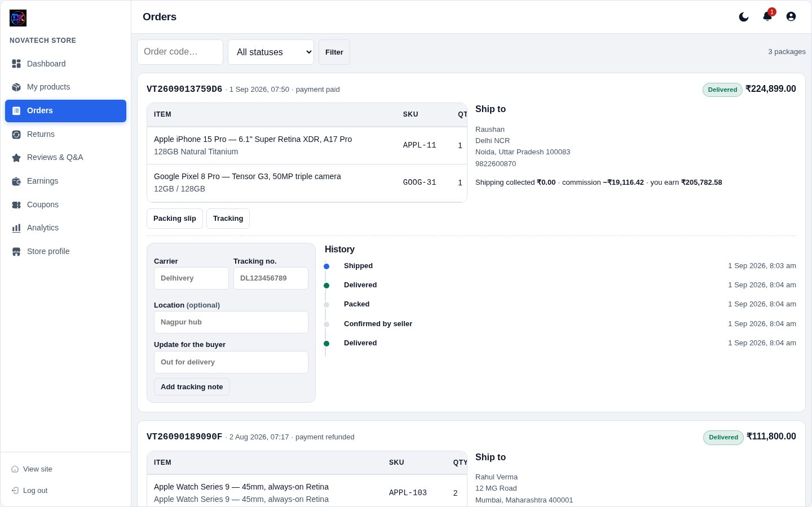
Only packages belonging to them. They update shipment status, carrier and
tracking through the same form you use — and those updates land in the same
append-only timeline the buyer sees.
A vendor requesting another vendor's package gets a 403.
Earnings
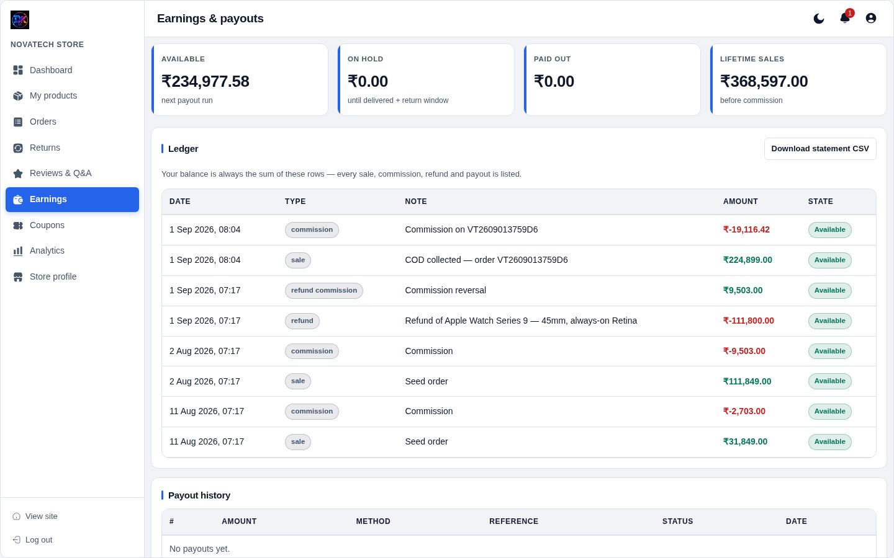
Pending, available and paid-to-date, plus every ledger line. Because this reads
the same vendor_ledger table as your payouts page, your figures and theirs
can never disagree.
Store profile
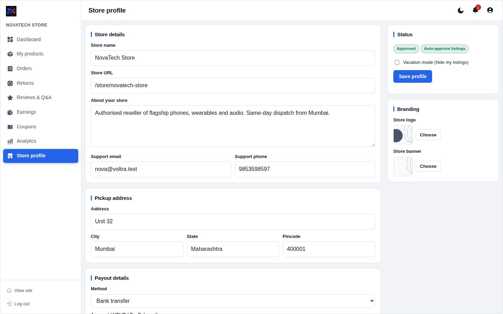
Store name, bio, logo, banner, support contact, address and payout details.
This is what buyers see on the storefront at /store/their-slug.
Also available to vendors
- Reviews & Q&A — reply to reviews and answer product questions
- Returns — handle RMA requests for their items
- Coupons — create discount codes for their own products only
- Analytics — views, add-to-carts and purchases for their catalogue
10 — SEO
There are no SEO fields
You will not find a "meta title" or "meta description" box anywhere. Everything
is derived from the content you already wrote, in includes/seo.php.
| Tag | Comes from |
|---|
</code></td><td>Product/post title + site name</td></tr>
<tr><td><code>meta description</code></td><td>Short description → body → auto-generated from the facts</td></tr>
<tr><td><code>canonical</code></td><td>The clean URL, with tracking params stripped</td></tr>
<tr><td>Open Graph + Twitter</td><td>Title, description, featured image (absolute URL)</td></tr>
<tr><td>JSON-LD</td><td>Built from the record — see below</td></tr>
</table>
<p>Write a good title and short description and the rest follows.</p>
<p></p>
<p><p>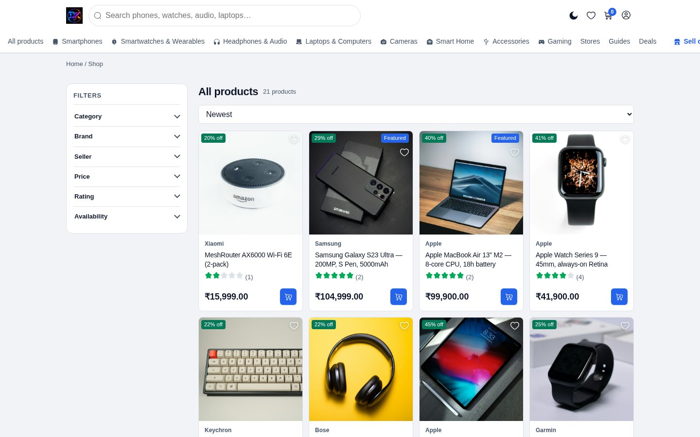</p></p>
<h2>Structured data</h2>
<table>
<tr><th>Page</th><th>Schema emitted</th></tr>
<tr><td>Product</td><td><code>Product</code> with price, stock, brand, rating, seller, return policy</td></tr>
<tr><td>Multi-variant product</td><td><code>AggregateOffer</code> with low/high price</td></tr>
<tr><td>Blog post</td><td><code>Article</code> with author and dates</td></tr>
<tr><td>Store</td><td><code>Store</code> with address</td></tr>
<tr><td>Every page</td><td><code>Organization</code> + <code>BreadcrumbList</code></td></tr>
</table>
<p>Test any page with <a href="https://search.google.com/test/rich-results">Google's Rich Results Test</a>.</p>
<h2>URLs</h2>
<p>Clean paths, not query strings:</p>
<table>
<tr><th>Page</th><th>URL</th></tr>
<tr><td>Product</td><td><code>/product/apple-iphone-15-pro</code></td></tr>
<tr><td>Blog post</td><td><code>/blog/best-smartwatches-2026</code></td></tr>
<tr><td>Store</td><td><code>/store/novatech-store</code></td></tr>
<tr><td>Category</td><td><code>/c/smartphones</code></td></tr>
<tr><td>Brand</td><td><code>/brand/apple</code></td></tr>
</table>
<p>Old <code>?slug=</code> URLs <strong>301 redirect</strong> to the clean version, so a page is never</p>
<p>indexable at two addresses.</p>
<blockquote>Changing a slug after publishing changes the URL and the old one 404s. Set</blockquote>
<blockquote>the slug before you publish.</blockquote>
<h2>Filtered pages</h2>
<p>Shop pages with a filter applied, and page 2 onwards, are automatically</p>
<p><code>noindex,follow</code>. Facet combinations would otherwise flood the index with</p>
<p>near-duplicate pages. Links are still crawled, so products stay discoverable.</p>
<h2>Sitemap and robots</h2>
<ul>
<li><code>/sitemap.xml</code> — generated live from published content, clean URLs only</li>
<li><code>/robots.txt</code> — generated, points at the sitemap</li>
</ul>
<p>Submit <code>https://yourdomain.com/sitemap.xml</code> in Search Console.</p>
<h2>Accessibility</h2>
<p>Every page scores <strong>zero WCAG 2 A/AA violations</strong> under axe-core, on desktop</p>
<p>and mobile. That matters for SEO too — labelled controls and sufficient</p>
<p>contrast are ranking-adjacent signals, and Lighthouse reports them.</p>
<hr>
</section><section id="11-backup">
<h1>11 — Backup & restore</h1>
<p><p>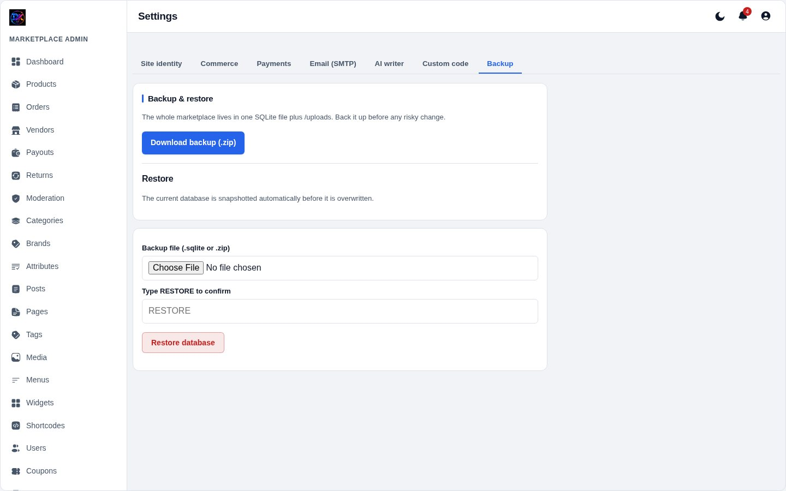</p></p>
<p><strong>Settings → Backup</strong></p>
<h2>Taking a backup</h2>
<p><strong>Download backup</strong> gives you a <code>.zip</code> containing the database — tick the</p>
<p>option to include <code>uploads/</code> as well.</p>
<p>If your host lacks the <code>zip</code> extension you get the raw <code>.sqlite</code> file instead.</p>
<p>That is equally valid; it just is not compressed.</p>
<p><strong>Back up before:</strong> upgrading, bulk-importing, editing anything in <code>db/</code>, or</p>
<p>any change you are unsure about.</p>
<h2>Restoring</h2>
<p>1. Choose your backup file (<code>.zip</code> or <code>.sqlite</code>).</p>
<p>2. Type <strong><code>RESTORE</code></strong> in the confirm box.</p>
<p>3. Click <strong>Restore database</strong>.</p>
<p>Two safety nets:</p>
<p>1. <strong>The current database is snapshotted first</strong>, alongside the live file.</p>
<p>2. <strong>The upload is validated before anything is overwritten.</strong> It is staged,</p>
<p> checked that it really is SQLite and contains the core tables, and only then</p>
<p> swapped in. A bad file is rejected and your live site is untouched.</p>
<blockquote>Restoring replaces <strong>all</strong> data — products, orders, vendors, settings. It</blockquote>
<blockquote>cannot be undone except by restoring another backup.</blockquote>
<h2>What is protected</h2>
<p><code>db/</code> is blocked at the web server by <code>.htaccess</code>, plus a rule denying</p>
<p><code>.sqlite</code>, <code>.sqlite-wal</code>, <code>.sqlite-shm</code>, <code>.backup</code> and <code>.sql</code> files anywhere.</p>
<p>Requesting <code>/db/voltra.sqlite</code> returns <strong>403</strong>.</p>
<p>PHP execution is also disabled inside <code>uploads/</code>, so an uploaded <code>.php</code> file</p>
<p>cannot be run.</p>
<h2>Manual backup</h2>
<p>The database is a single file. Over SSH:</p>
<pre><code>
cp db/voltra.sqlite ~/backups/voltra-$(date +%F).sqlite
tar czf ~/backups/uploads-$(date +%F).tar.gz uploads/
</code></pre>
<p>A nightly cron job doing exactly that is a perfectly good backup strategy.</p>
<hr>
</section><section id="12-troubleshooting">
<h1>12 — Troubleshooting</h1>
<h2>Pretty URLs 404 (<code>/product/xyz</code> not found)</h2>
<p><code>mod_rewrite</code> is off, or <code>.htaccess</code> is being ignored.</p>
<ul>
<li>Confirm <code>.htaccess</code> uploaded (it starts with a dot — many FTP clients hide it)</li>
<li>Ask your host to enable <code>mod_rewrite</code></li>
<li>On Apache, <code>AllowOverride All</code> must be set for your directory</li>
<li>Testing locally? Use <code>php -S 0.0.0.0:8080 router.php</code> — plain <code>php -S</code> has no</li>
<p> rewrite support</p>
</ul>
<p>Query-string URLs (<code>/product.php?slug=xyz</code>) keep working either way.</p>
<h2>Blank white page</h2>
<p>PHP is erroring with display off. Check your host's error log. Most common</p>
<p>causes:</p>
<ul>
<li>PHP older than 8.1</li>
<li><code>pdo_sqlite</code> not enabled</li>
<li><code>db/</code> not writable</li>
</ul>
<h2>"Unable to open database file"</h2>
<p><code>db/</code> is not writable. Set it to <code>755</code> (or <code>775</code> on stricter hosts) and make</p>
<p>sure <code>db/voltra.sqlite</code> itself is writable.</p>
<h2>Images upload but do not appear</h2>
<p><code>uploads/</code> is not writable, or the path is wrong. Check the file exists on</p>
<p>disk, then open its URL directly. If you get 403, your host may be blocking</p>
<p>the folder.</p>
<h2>Logo or favicon not showing</h2>
<p>Set both in <strong>Settings → Site identity</strong>, then hard-refresh (<code>Ctrl+F5</code>).</p>
<p>Browsers cache favicons aggressively — try a private window to confirm.</p>
<h2>Emails not sending</h2>
<ul>
<li>Check port: <strong>587</strong> for STARTTLS, <strong>465</strong> for SSL</li>
<li>Many shared hosts block outbound SMTP — use their relay, or a service like</li>
<p> Brevo or Mailgun</p>
<li>Gmail needs an <strong>app password</strong>, not your account password</li>
<li>Use <strong>Send test email</strong> to see the actual error</li>
</ul>
<h2>Payment succeeds but the order stays unpaid</h2>
<p>The gateway callback is not reaching you.</p>
<ul>
<li>Razorpay: check the webhook URL and that the secret matches exactly</li>
<li>PayPal: confirm live/sandbox matches your keys</li>
<li>The callback must be publicly reachable — it will not work on localhost</li>
</ul>
<h2>Vendor sees "not your resource"</h2>
<p>Working as intended. A vendor can only touch their own products, orders and</p>
<p>packages. If they genuinely need access, the record is assigned to another</p>
<p>seller — check the product's <strong>Seller</strong> field.</p>
<h2>Save shows a blank page</h2>
<p>Fixed in the current build — panel screens buffer their output so a</p>
<p>redirect-after-save always fires. If you see it, you are on an older copy.</p>
<h2>Countdown timer not appearing</h2>
<p>The timer only renders while the deal is <strong>in the future</strong>. Check <strong>Deal ends</strong></p>
<p>in the product editor is set and has not passed. It also needs the product to</p>
<p>be discounted (MRP above price) to look right.</p>
<h2>Everything looks unstyled</h2>
<p><code>assets/css/app.css</code> is not loading. Open its URL directly — a 404 means the</p>
<p>upload was incomplete; a 403 means permissions.</p>
<h2>Getting more detail</h2>
<p>Temporarily add this to the top of <code>includes/config.php</code>:</p>
<pre><code>
ini_set('display_errors', '1');
error_reporting(E_ALL);
</code></pre>
<p><strong>Remove it once you are done.</strong> Never leave error display on in production —</p>
<p>it leaks file paths and query structure.</p>
<hr>
</section></main><script>
const links=[...document.querySelectorAll('nav a')];
const secs=links.map(a=>document.querySelector(a.getAttribute('href')));
function sync(){
let i=secs.findIndex(s=>s&&s.getBoundingClientRect().top>90);
if(i===-1)i=secs.length; i=Math.max(0,i-1);
links.forEach((a,n)=>a.classList.toggle('on',n===i));
}
document.addEventListener('scroll',sync,{passive:true}); sync();
</script> |